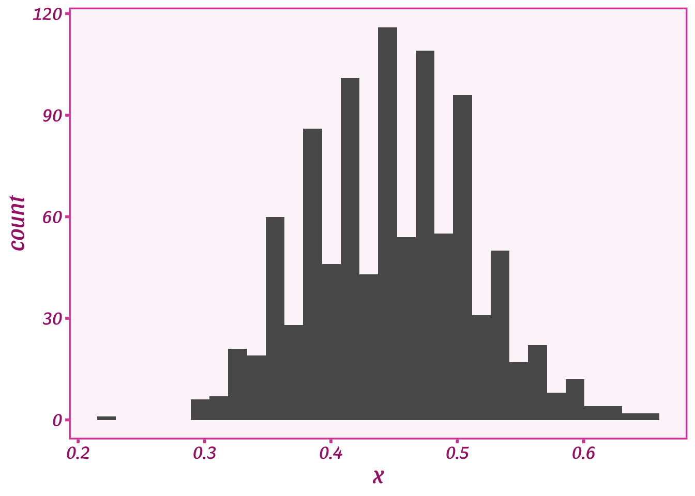
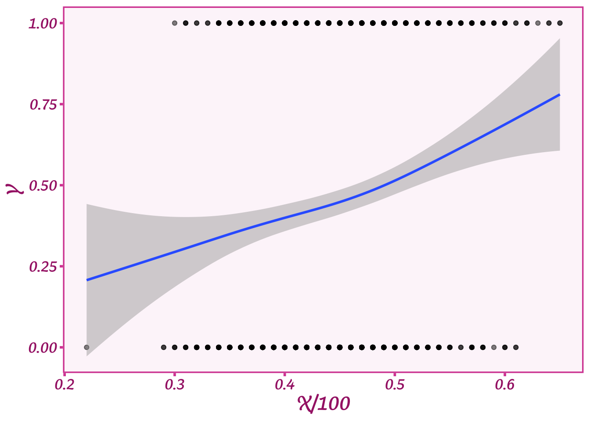
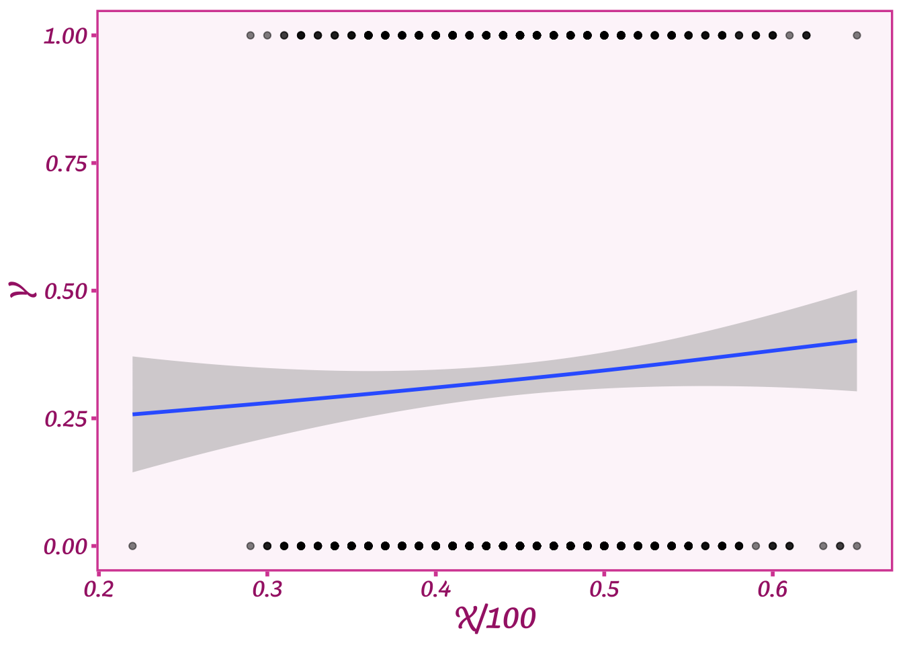
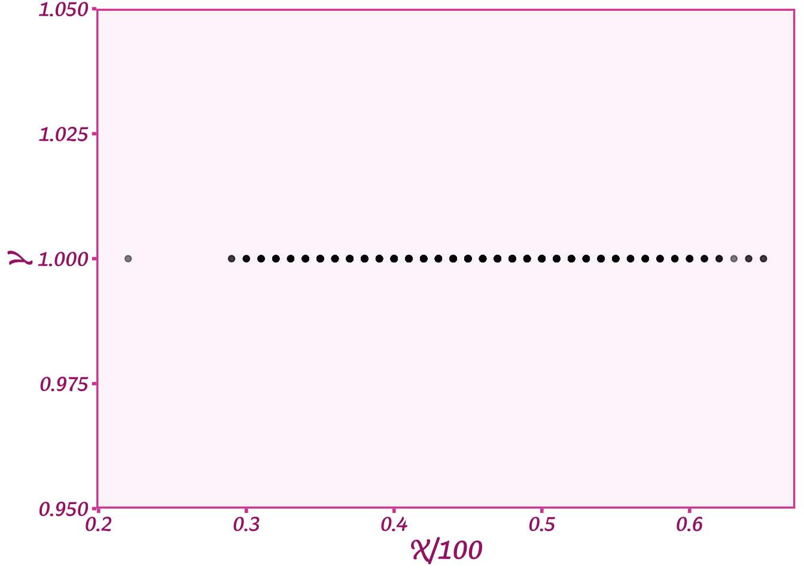
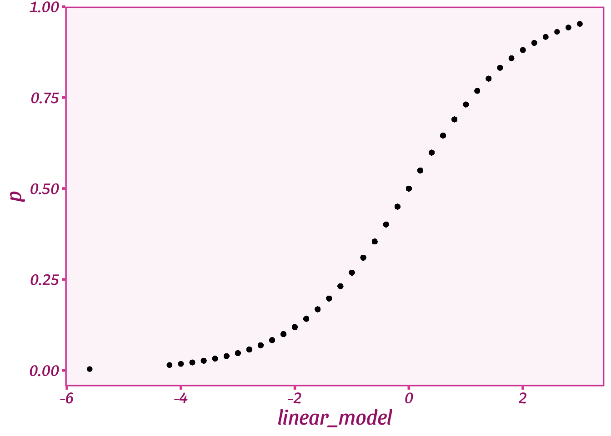

X <- rpois(1000, 45)
ggplot(tibble(x=X),aes(x=x)) + geom_histogram() + theme_barbie()Perhaps no other subject in applied statistics and machine learning has caused people as much trouble as the humble logit model. Most people who learn either subject start off with some form of linear regression, and having grasped it, are then told that if they have a variable with only two values, none of the rules apply. Horror of horrors: logit is a non-linear model, a doom from which few escape unscathed. Interpreting logit coefficients is a fraught exercise as not only applied researchers but also statisticians have endless arguments about how this should be done.
In this post I de-mystify logit—and show why it’s such a useful model—by using maps. Yes, non-linear spaces can be tricky to understand, but as humans we can think reasonably well in up to three dimensions. If you know what the difference between a map and a globe is, then you can run and interpret logit just fine.
I’m also going to argue based on this analogy that people who assiduously avoid logit are not so dissimilar from flat earthers. It’s true that moving from a map to a globe induces additional complications, but the alternative is run into significant problems in navigation. Similarly, applying the workhouse OLS model to a binary outcome isn’t wrong, but it can lead you astray when you want to figure out the distance between two points. Once you read this post, I hope you’ll see why logit is not all that complicated and should be the preferred model with a binary outcome.
B Is For Bernoulli
I’ll start first with a review of what a logit model actually is as there is some confusion on this score. Logit is the wrong name for what most people are estimating; the model is in fact the Bernoulli distribution. This distribution has the following form for a variable \(Y\) that takes on two values, i.e. 0 or 1:
\[ P(Y = k) = \begin{cases} p, & \text{if } k=1, \\1-p, & \text{if } k=0. \end{cases} \]
As soon as the math appears, of course, it looks complicated. This formula is actually the simplest statistical distribution once you break it down. What it says is that, on average, the probability that a variable \(Y\) is equal to 1 is determined by the parameter \(p\), which represents a probability or a proportion. Suppose that \(Y\) has 10 values, 30% of which are zeroes (0s) and 70% of which are 1s. In that case, \(p\) would be equal to 0.7 or 70% because 70% of the time \(Y\) is equal to 1. The probability of 0s is then \(1-p\) or 100% - 70% = 30%. Easy peezy.
What is important to remember, though, is that \(p\) is a proportion, so it can’t be greater than 1 or less than 0. (That’s why the Bernoulli and Beta distributions are connected, which I discuss in my other post on the topic). You can’t have \(Y\) be equal to 1 more than 100% of the time or less than 0% of the time; that’s nonsensical.
You’ve probably noticed that so far we haven’t mentioned the word “logit” at all. Where does this tricky little monster come in?
Well if all we want to do is calculate the average proportion of 1s in \(Y\) then all we need is \(p\). But what if we want to see if there is a relationship between some covariate \(X\), say how old a person is, and a binary variable like \(Y\)? For example, suppose we want to know if older people are more likely to vote for Biden: voting can take on two values, either voting (1) or not voting (0). As an example, I’ll generate some plausible-looking age data for a bunch of citizens that we’ll call our covariate \(X\):
We see that the average person in our data is about 45 years old and the age range is between roughly 20 and 60. What we want to understand is whether on average older (or younger) people tend to vote more for Biden. But we have a problem - \(p\) in the Bernoulli distribution cannot be any bigger than 1 or less than 0, and our age variable \(X\) goes from 20 to 70. Yikes! We can’t just pop \(X\) into \(p\) and without going way outside that range.
If you take a look at \(X\), you might think, “OK, well, just divide \(X\) by 100 and it’ll be between 0 and 1.” Great thought! Let’s do that and plot \(X\) again:
ggplot(tibble(x=X/100),aes(x=x)) + geom_histogram() + theme_barbie()
We just squashed \(X\) to be small enough that we could just pop it into the Bernoulli distribution:
\[ P(Y = k) = \begin{cases} X, & \text{if } k=1, \\1-X, & \text{if } k=0. \end{cases} \]
Here we simply replaced \(p\) with our covariate \(X\). Very nice! We can even generate random data using a simple algorithm from this function:
Draw a random number between 0 and 1.
If the random number is less than \(X\), set \(Y\) equal to 1, and 0 otherwise.
Here’s what our random data \(Y\) look like compared to \(X\):
Y <- as.numeric(runif(length(X))<(X/100))
ggplot(data=tibble(Y,X),aes(y=Y,x=X/100)) +
geom_point(alpha=0.5) +
stat_smooth() +
theme_barbie()
What our plot shows is that when X is high, we tend to get more 1s in \(Y\), and when \(X\) is low, we tend to get more 0s. The blue line shows what the average value of \(Y\) is for a given age. When age is quite high, about 0.65 or 65 years, then \(Y\) is about 0.65 or 65% on average (as we expect given the 1:1 relationship).
If you look at this formula, though, you might think something is a bit off. Do we think that someone’s age as a fraction will be exactly equal to their probability of voting for Biden? Will voters who are 70 years old have an exactly 70% chance of voting for him? We only have one option for describing that relationship, and a 1:1 correspondence seems very limiting. So what do we do if we think this relationship is more nuanced?
To allow the relationship to be less exact, we’ll take a page out of linear regression and add a coefficient to multiply \(X\), which we’ll call \(\beta\). We’ll add \(\beta\) to our little formula:
\[ P(Y = k) = \begin{cases} \beta X, & \text{if } k=1, \\1-\beta X, & \text{if } k=0. \end{cases} \]
Now let’s say \(\beta\) is equal to 0.5. Then, the probability that someone will vote for Biden if they are 70 years old is only 35%. If \(\beta\) goes up, then that relationship would be stronger. Adding a coefficient allows us to express the relationship between \(X\) and \(Y\) with a lot more nuance.
You might see some further issues, though. What if \(\beta\) is equal to 0? In that case, the probability that someone votes for Biden is also equal to exactly 0%. In probability world, that’s not a good thing—we can’t be 100% certain that someone will or will not vote for Biden. We’ll get around this problem by adding another parameter called the intercept, \(\alpha\):
\[ P(Y = k) = \begin{cases} \alpha + \beta X, & \text{if } k=1, \\1-(\alpha + \beta X), & \text{if } k=0. \end{cases} \]
This is a handy dandy trick to allow \(\beta\) to equal 0 without having the probability of \(Y\) to be equal to 0 as well. Say \(\alpha\) is 0.35–then if \(\beta\) is 0, 35% of people would still vote Biden. \(\alpha\) could be thought of as a baseline rate—without considering the effect of age, how many people vote for Biden? Once we add \(\alpha\), this equation is the same as the slope of a line (good ol’ \(mx + b\)), which makes it a linear model (linear means a straight line).
We now have a linear model we want to stick in \(p\) to model the relationship between age (\(X\)) and voting for Biden (\(Y\)). We’ve made progress, but we’re still gonna have issues squashing \(X\) into a proportion. The trick is that we need \(\alpha + \beta X\) to always output a number between 0 and 1. We can’t have a proportion greater than 1 or less than 0. For these reasons, to use this model we have to pick specific values for \(\alpha\) and \(\beta\) that allow us to keep within those bounds. For example, we could set \(\alpha\) to 0.1 (a baseline rate of 10% of 1s) and \(\beta\) to 0.5. Let’s simulate some data with those numbers and plot it:
Y <- as.numeric(runif(length(X))<(0.1 + .5*(X/100)))
ggplot(data=tibble(Y,X),aes(y=Y,x=X/100)) +
geom_point(alpha=0.5) +
stat_smooth() +
theme_barbie()
We now have a much weaker relationship between age and voting: voting for Biden increases a bit as people age, but not much. But we do now have a much more nuanced relationship than we started out with by using the divide by 100 method. Very cool!
However, you might be wondering—what if we want even more diverse relationships? What if \(\beta\) were greater than 1? Or 3? Or 10? Let’s plot what happens when we set \(\alpha\) = 0.1 and \(\beta\)=3:
Y <- as.numeric(runif(length(X))<(0.1 + 3*(X/100)))
ggplot(data=tibble(Y,X),aes(y=Y,x=X/100)) +
geom_point(alpha=0.5) +
stat_smooth() +
theme_barbie()
Yikes! Now we’re only getting values for \(Y\) that are equal to 1. What happened to all the 0s? When we multiply \(X\) by 3, we now get values way bigger than 100%. For an age of 50, \(X/100\) = 0.5, and \(3\cdot X=1.5\) or 150%. Shucks! This means we can’t just pick whatever values we want for \(\beta\) or \(\alpha\). That’s frustrating especially if we think that relationship could be really strong and we want \(\beta\) to be large.
Not All Heroes Are Linear
We now have two options. We can keep on guessing what values might work for \(\alpha\) and \(\beta\), or… we could get a map. A map that would allow us to translate or transform our linear model \(\alpha + \beta X\) into the cramped space of \(p\). Like the teleporter in Star Trek, we need something that can move our value of \(\alpha + \beta X\) to the right spot on \(p\) without going over 1 and under 0.
This is where our good friend logit comes in. Logit is a function that can take in any number–literally any number–and magically transform it to a number that is strictly between 0 and 1. It’s a magical map that let’s us move from the world of ages and to the world of proportions between 0 and 1. NB: Technically this is not the logit function but rather the inverse logit function. But everyone calls the model “logit” so I’ll just use that term.
The function itself is a bit ugly, but I’ll include it here along with our linear model as the input and \(p\) as the output:
\[ p = \frac{1}{1 + e^{-(\alpha + \beta X)}} \]
I won’t spend a lot of time on explaining the function other than to note that it has the number \(e\), which is where a lot of the magic comes from. We can test whether it can really do these transformations by plotting a range of numbers for our linear model and seeing what the logit function spits out:
beta <- .2
alpha <- -10
logit <- function(x) { 1 / (1 + exp(-(x))) }
tibble(linear_model=alpha + beta * X) %>%
mutate(p=logit(linear_model)) %>%
ggplot(aes(y=p, x=linear_model)) +
geom_point() +
theme_barbie()
On the bottom you can see all the values for our linear model when \(\alpha=-10\) and \(\beta=0.2\). Across the range of ages, the linear model runs from -2.5 to 2.5 or way outside the bounds of \(p\). But our logit function spits out a number for \(p\) that is between 0 and 1. It also has this cool bend-y shape, or what’s known as a sigmoid. Basically, the line is straight or linear right around the midpoint of \(p\) or 0.5. When it gets close to the end points of \(p\), or proportions that are very high or very low, it starts to bend like a driver avoiding a barrier in a car.
If you notice, though, while the line curves, it never changes the direction. When the linear model goes up, so does \(p\). That’s why we can use this function–we will learn about the direction and magnitude of the relationship between age and voting. We just learn that information while respecting the bounds of proportions and the full range of our covariates. Pretty cool!
A Whole New World
Often people get confused or suspicious at this point. What’s up with this weird S-curve thing? Linear models are nice and straight. Why do we need the bend-y thing?
To understand this, we can return back to our analogies of maps. The maps that we use are all two-dimensional: we can put them on a table and they lie flat. However, we know that they aren’t completely accurate because the Earth is not flat, it’s round. A globe is the truly accurate representation of the Earth. A flattened map is going to inevitably cause distortions.
As a result, when we trace a flight path on a flat map, the plane’s journey is always curved as in the picture below:

This flight path–which happens to be for a very long flight from Paris to Tahiti–seems bizarrely roundabout on the map. You would think that the straightest path between Paris and Tahiti would be a straight line. This would be true if the Earth were flat, but it’s not. The Earth is round, and the map is a linear projection of a 3-D object onto a 2-D surface. When we do that and calculate the most direct route, we end up with this weird bend-y shape: just like our logit plot above.
By the same analogy, our linear model is our simplified version of reality that allows us to understand the relationship between \(X\) and \(Y\). Logit is the transformation that takes us from this simplified world to the real world of \(Y\) via \(p\). It does that by warping the space that the straight line of our linear model travels. To see this, let’s take another look at our logit plot:
beta <- .2
alpha <- -10
logit <- function(x) { 1 / (1 + exp(-(x))) }
tibble(linear_model=alpha + beta * X) %>%
mutate(p=logit(linear_model)) %>%
ggplot(aes(y=p, x=linear_model)) +
geom_point() +
theme_barbie()When the linear model is 0–or \(p\) is around 0.5–the logit function allows \(p\) to change relatively quickly as the linear model changes. However, when the linear model gets very low or very high–i.e., \(p\) is close to 0 or 1–the logit function only lets \(p\) change slowly as the linear model changes. To get from a \(p\) of 0.1 to almost 0 requires the linear model to move about -2 points on the \(x\) axis, but to get from a \(p\) of 0.5 to a \(p\) of 0.25 only requires a movement of about -0.5 in the linear model space.
The magical part of logit is that it creates more space as the linear model gets very big or very small. The linear model keeps moving at the same rate (\(\beta\)) but \(p\), the proportion, does not. \(p\) slows down as though more and more space kept appearing. Like Jim Carrey in the Truman Show who can never escape from his artificial world, the linear model can never escape the bounds of \(p\). The closer it gets to the bounds, the farther it has to travel–the more warped the linear model space becomes relative to \(p\). In other words, at the edges the linear model map is less accurate and so we see a stronger bend in the logit function to compensate.
Flat Earthers and the Logit Function
What is logit then? A handy dandy scaling function that maps a linear model to a proportion between 0 and 1. That’s all it does. The actual distribution is the Bernoulli (though sadly, no one calls it that). A logit function isn’t special—there are other similar functions, just as there are a lot of map coordinate transformations (talk to a GIS person sometime; it’ll bore you to tears).
There are people who really don’t like logit. Usually it’s something to do with how the function complicates things and makes these bend-y shapes. It does require some thinking as we have to think a bit about what our linear model coefficient \(\beta\) means. The linear model is a straight line, but the space it is passing through changes as \(p\) changes. What that means substantively is that \(\beta\), or the effect of age on the proportion voting for Biden, will vary depending on how big or small the proportion voting for Biden is. If that proportion is small, a big value of \(\beta\) will result in much smaller movement in voting than when the proportion voting is closer to 50%.
It is this bend-y (or non-linear) nature of logit that leads some people to just ignore the Bernoulli and use a linear model. That is an easy way to deal with the problem, but unfortunately, we cannot simply ignore this transformation. Like flat earthers, if we ignore the fact that the Earth is round, we won’t be able to calculate distances accurately. If we have a linear model that can get larger or smaller than 0% or 100%, then we will end up with nonsensical predictions from our linear model like a plane that ends up at the wrong airport because the pilot believed the Earth was flat.
So how do you interpret a logit model coefficients? There are two ways once you understand what the logit function does:
- Leave it as it is. The coefficient \(\beta\) is the relationship of the covariate (\(X\)) to the outcome (\(Y\)) in the linear or “flat” space. The larger \(\beta\) is, the stronger the relationship is between the covariate and the outcome. No, we don’t know exactly how much the proportion will change as \(X\) changes, but we can still interpret \(\beta\) as expressing what that change looks like in the simple space of the linear model.
- Convert it to changes in \(Y\) via the proportion \(p\). Just like a plane figuring out distances using transformation of coordinates, we can figure out the average change in a proportion \(p\) by averaging (or marginalizing) over different logit functions for a given \(\beta\). I won’t go into the technical details, but we have very handy R packages to calculate what are called marginal effects: how much does the “real world” \(p\) change as our linear model coefficient \(\beta\) changes?
There are plenty of vignettes about how to calculate marginal effects on the R package marginaleffects website. Here I’ll show how to calculate a marginal effect of \(X\) on \(Y\) with our linear model coefficients of \(\alpha=-10\) and \(\beta=0.2\). To do so I’ll first simulate data with these values and then fit a logit (i.e. Bernoulli) model with the R function glm:
# simulate our outcome Y given our linear model parameters
Y <- as.numeric(runif(length(X))<logit(alpha + beta*X))
# make a dataset and fit the model for Y and X
# note that glm says the family is "Binomial"
# Bernoulli is a special case of the Binomial
# and our link (scaling) function is logit!
sim_data <- tibble(Y=Y, X=X)
logit_fit <- glm(Y ~ X,data=sim_data,family=binomial(link="logit"))
summary(logit_fit)
Call:
glm(formula = Y ~ X, family = binomial(link = "logit"), data = sim_data)
Deviance Residuals:
Min 1Q Median 3Q Max
-2.2091 -0.7986 -0.4686 0.8678 2.5201
Coefficients:
Estimate Std. Error z value Pr(>|z|)
(Intercept) -9.78933 0.70117 -13.96 <2e-16 ***
X 0.19578 0.01484 13.20 <2e-16 ***
---
Signif. codes: 0 '***' 0.001 '**' 0.01 '*' 0.05 '.' 0.1 ' ' 1
(Dispersion parameter for binomial family taken to be 1)
Null deviance: 1250.71 on 999 degrees of freedom
Residual deviance: 998.47 on 998 degrees of freedom
AIC: 1002.5
Number of Fisher Scoring iterations: 5Above we see the output of the glm command that shows us the values of \(\alpha\) (the intercept, as noted in the command output) and \(\beta\), which is listed as the Estimate for X. These are the values of these parameters in the linear, or simple, space. There is nothing wrong with these coefficients: they tell you how much \(X\) is changing with respect to \(Y\) in the linear space. How much actual change in \(Y\) happens, though, depends on exactly where we are (or how high or low the proportion of 1s is in \(Y\)).
If we want to convert these relationships to the distances/effects in the outcome \(Y\) (i.e. changes in the proportion \(p\)), we can use the avg_slopes function from marginaleffects:
library(marginaleffects)
avg_slopes(logit_fit,variables="X")
Term Estimate Std. Error z Pr(>|z|) 2.5 % 97.5 %
X 0.0324 0.00158 20.5 <0.001 0.0293 0.0355
Columns: term, estimate, std.error, statistic, p.value, conf.low, conf.high Note that this Estimate is way smaller than the Estimate for \(\beta\) from the glm command. That estimate was from the linear space and so is much bigger. The marginaleffects command is telling us how much \(p\), or the proportion of 1s in \(Y\), changed as our covariate \(X\) increased. It did this by averaging over different logit functions given changes in \(X\) (you can see the package info for more technical details). On average, as age increased by 1 year, the proportion voting for Biden increased by 0.0325 or 3.25% with a confidence interval of (2.93%, 3.56%).
Very cool! Now that you understand logit models and how to interpret linear model coefficients in both the linear space and via marginal effects, you know pretty much everything you need to know about this wonderful little function logit. Next time you have a binary outcome like voting for Biden, or anything else, give logit a go! It’s your map to a whole new world.